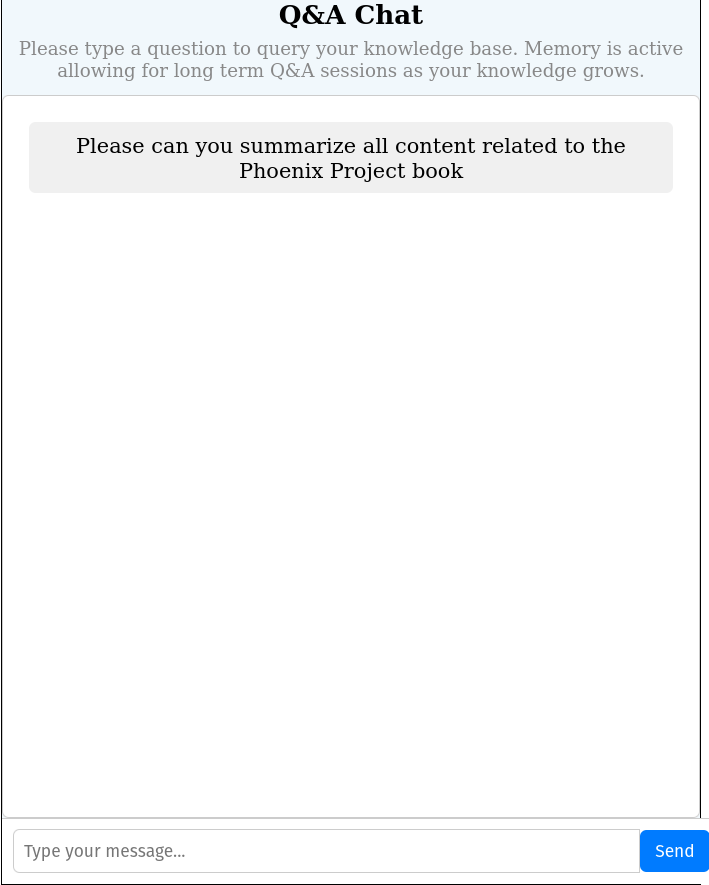
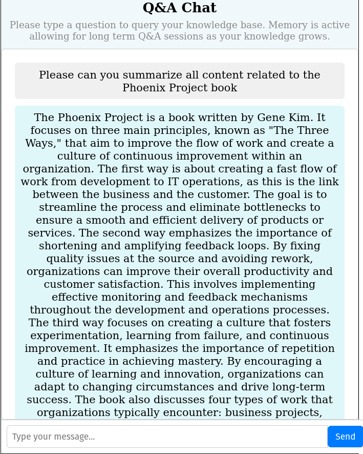
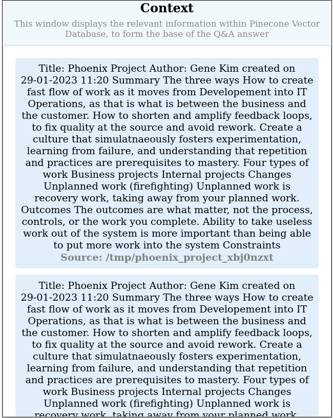
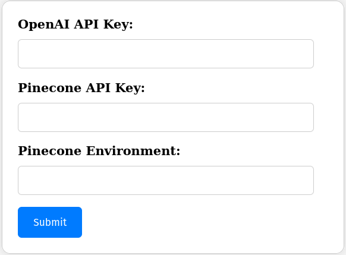

CATO
Creating Awesome Text Org
Creating Awesome Text Org
This tool allows you to query your uploaded documents, in a Q&A manner. This tool makes use of Pinecone to perform a similarity query on your submitted query, the resources found to be most similar will be used to construct a response from the chatbot. Additionally, the chatbot has in-chat memory and can reference previous answers
Please type your query into the Q&A Chat Box:
The query will be run and a response generated based on your query request. Below is an example:
All resource related context will be displayed in the context window on the left. Example below:
Please note, this tool is designed to Q&A over existing documents only, if no similarities are found it will state the case that no material was found and as such no complete response could be generated.
A primary use-case of this tool is within academic research, to determine sources of similar context to support or find out more about a topic.
The credentials forms allows you to setup your credentials for both Pinecone and OpenAI. The credentials form looks as follows:
Please consult the project **README** for further information on finding the API keys. For more information on the tools used, please further review Pinecone and OpenAI.
Please insert your details and click **Submit**, this will set your keys as Environmental Variables on your local machine, keeping your keys secure and ensuring a single login step.